← Índice de los 69 tutes de IDA
Tute 33 · Plugins de WinDbg + Mona
se conecta con: Vulnerabilidades (defensivo)
INTRODUCCIÓN AL REVERSING CON IDA PRO DESDE CERO PARTE 33.
PLUGINS PARA WINDBG STANDALONE.
Vamos a instalar un par de plugins para el Windbg que nos ayudarán más adelante cuando trabajemos.
Lamentablemente estos plugins solo corren en Windbg, pero si los corres en el Windbg incluido en el IDA lo hacen crashear a este último, posiblemente porque se conflictúa con el Python incluido en IDA, pero bueno los usaremos en el Windbg separado cuando los necesitemos.
PYKD y MONA.
Copiaremos los archivos que adjunte en la carpeta winext, que se encuentra dentro de la carpeta donde está instalado el windbg y instalo el runtime vcredist_x86.exe.
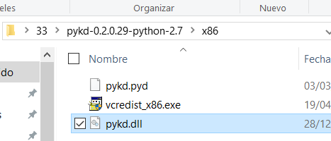
Luego debo configurar las variables de entorno del sistema.
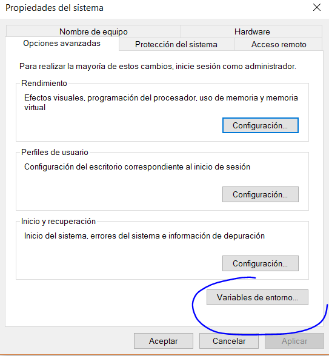
Agregue una variable PYTHONPATH, a la cual le pongo el directorio de Python, luego punto y coma y luego el directorio de winext en mi caso queda.
C:\Python27;C:\Program Files (x86)\Windows Kits\10\Debuggers\x86\winext
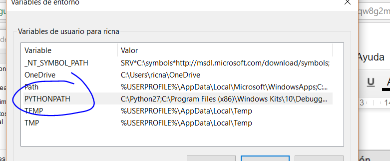
y a la variable Path que ya existía le agrego al final un punto y coma y C:\Python27\
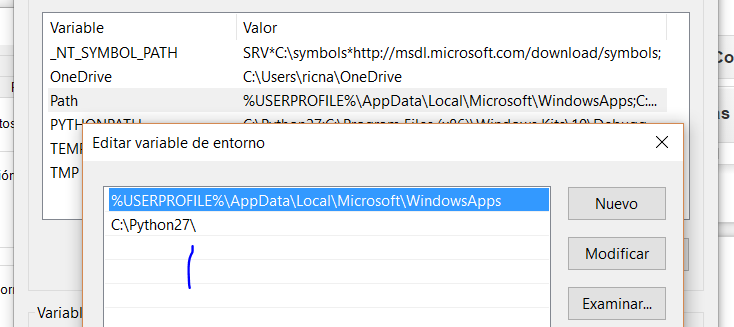
Me fijo que tenga la barra al final, lo agrego en variables de sistema también a path.
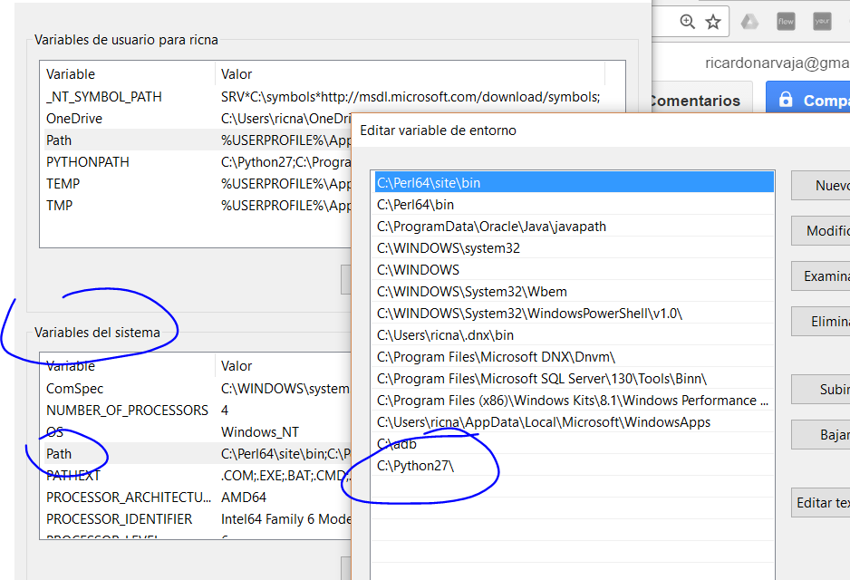
Bueno luego de reiniciar la máquina o matar el explorador de Windows, ya deberíamos en cualquier consola poder tipear Python y que lo acepte.
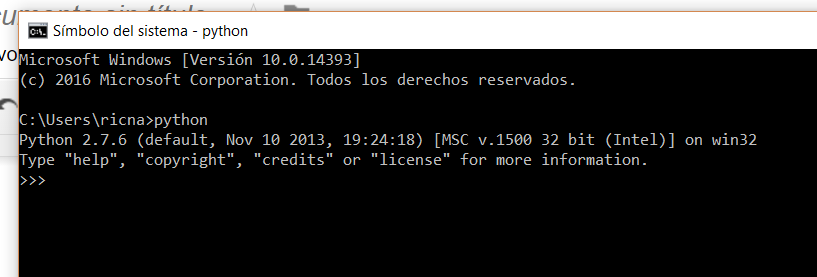
Y lo último bajarse las últimas versiones de
windbglib.py https://github.com/corelan/windbglib/raw/master/windbglib.py
mona.py from https://github.com/corelan/mona/raw/master/mona.py
y copiarlas a la misma carpeta donde esta el windbg.exe
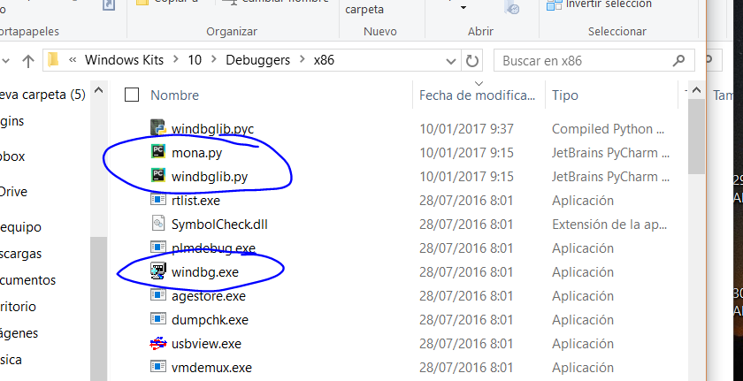
Con eso ya debería funcionar probemos arranquemos windbg suelto, sin IDA, si les llega a fallar seguramente les faltara algún runtime, si no debería funcionar correctamente.
Con CTRL + E abrimos algún ejecutable.
Cuando se detiene tipeamos.
!load pykd.pyd
No pasara nada pero no debe dar error.
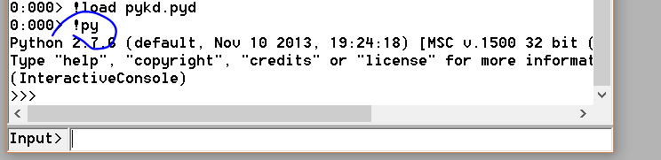
Con !py puedo ejecutar scripts, si pongo el path del mismo a continuación, pero al menos por ahora abri una consola de Python.
Allí puedo ejecutar también comandos de Python.
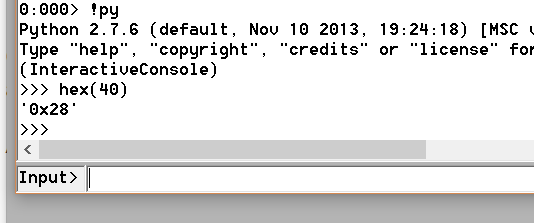
Ahora probare mona, salgo de la consola con exit() y tipeo
!Load pykd.pyd
!py mona
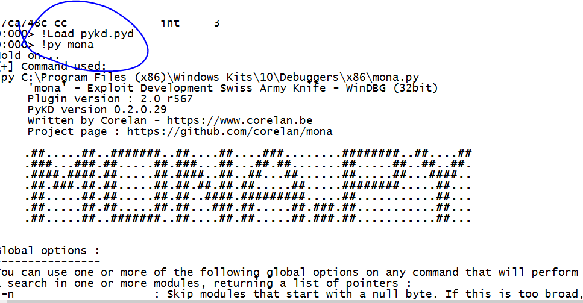
probemos algunos comandos
!py mona modules
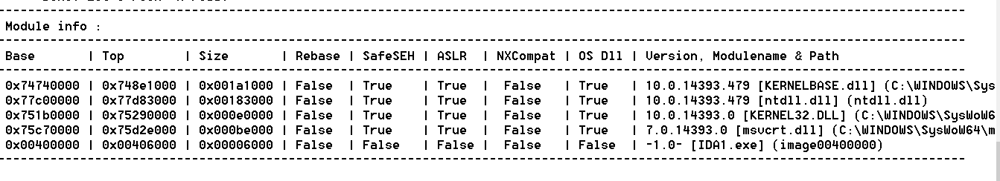
Vemos las protecciones de los módulos que están corriendo, ya las estudiaremos más adelante, ahora estamos preparando para poder tener todo listo para ir a fondo.
!py mona rop
Eso tardara muchísimo, intentará ver si hay algún modulo donde pueda generar un ROP (más adelante veremos lo que es) y tratara de construirlo.
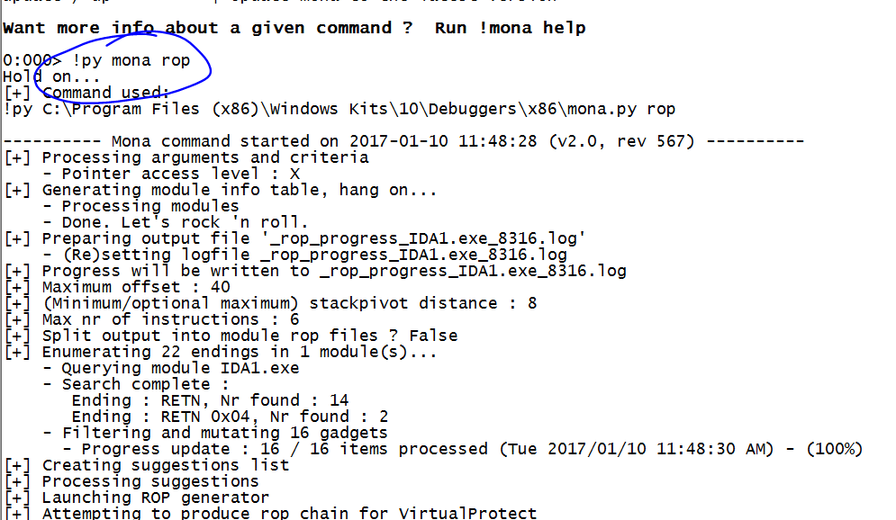
A veces podrá crearlo a veces no, pero al menos vemos que está funcionando.
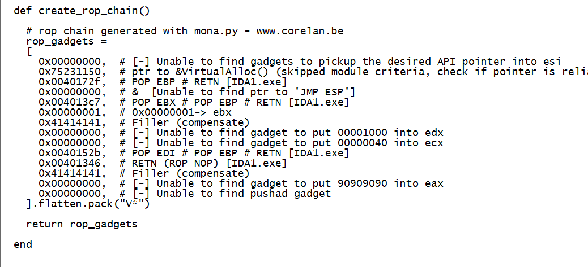
Vemos que devolvió lo que pudo y como no arranque el windbg como administrador no pudo escribir el archivo con la salida, pero igual la imprime.
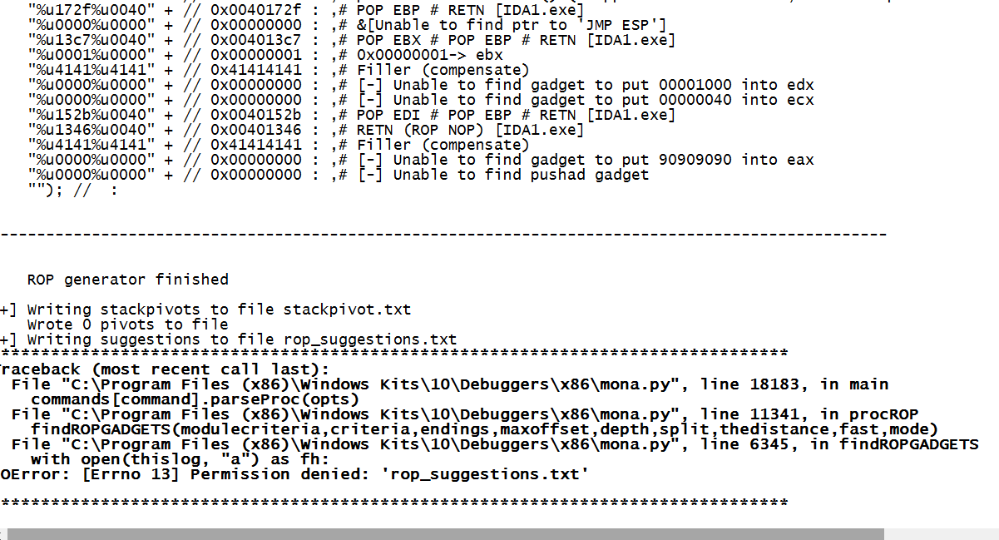
Podemos chequear si hay un update de mona.
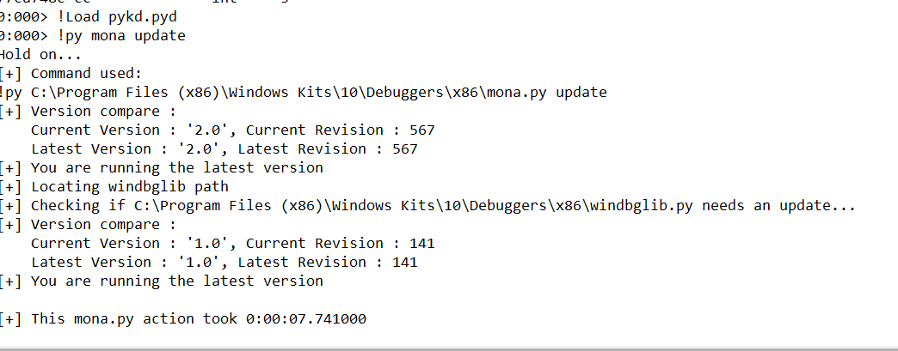
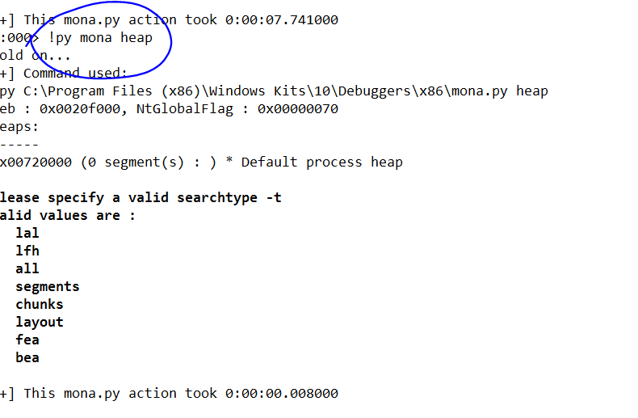
Atacheando a un proceso que está corriendo, en este caso el notepad++
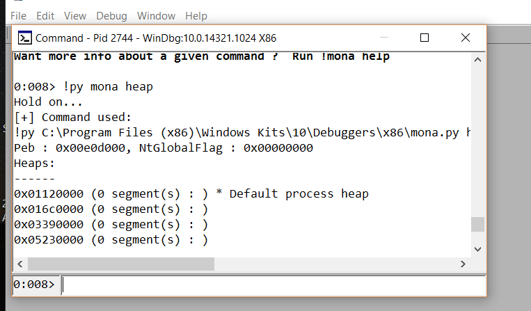
Puedo ver el estado del heap.
Ya profundizaremos sobre esto, de cualquier manera, el windbg también tiene comandos de heap sin usar mona, que podemos usar dentro de IDA.
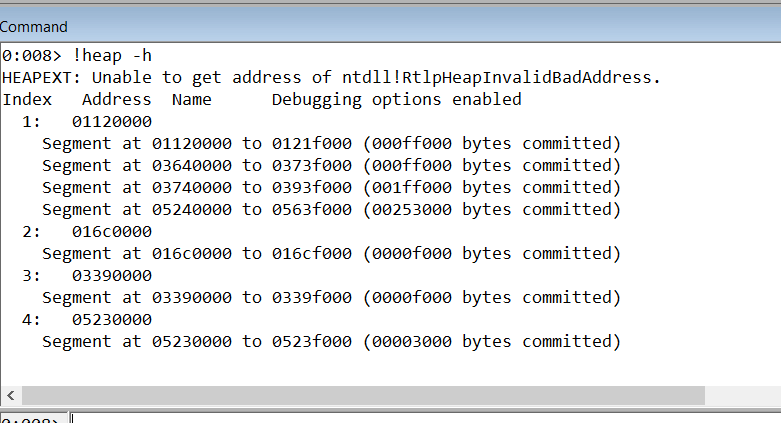
Así que estamos bien, al menos si necesitamos tenemos varias opciones, dentro y fuera de IDA y lo tenemos todo instalado para ir adelante.
Más comandos para divertirse (tiene miles jeje)
!py mona assemble -s "jmp esp"
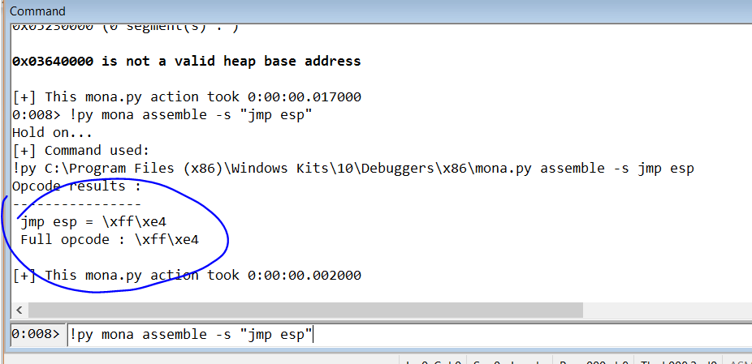
!py mona getiat
La verdad tiene muchos comandos útiles este para ver las funciones importadas.(aunque tarda mucho)
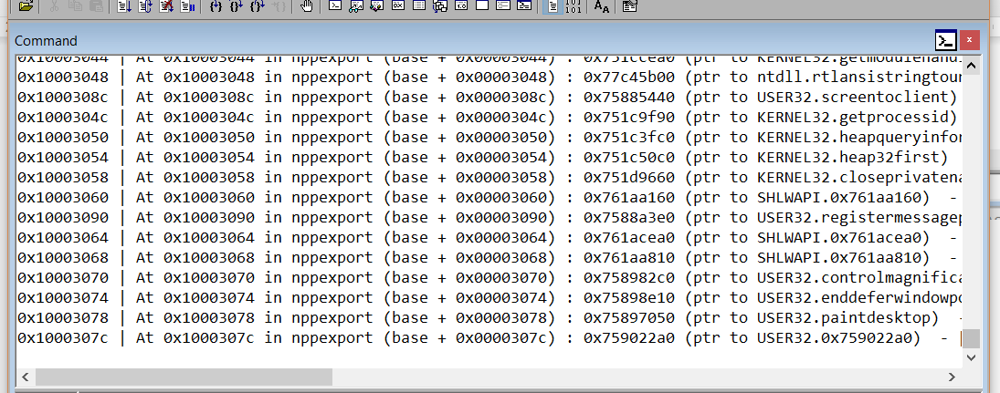
Conviene ejecutarlo como administrador para que guarde tanta información en un archivo podemos obtener también info de una dirección, por ejemplo.
!py mona info -a dirección.
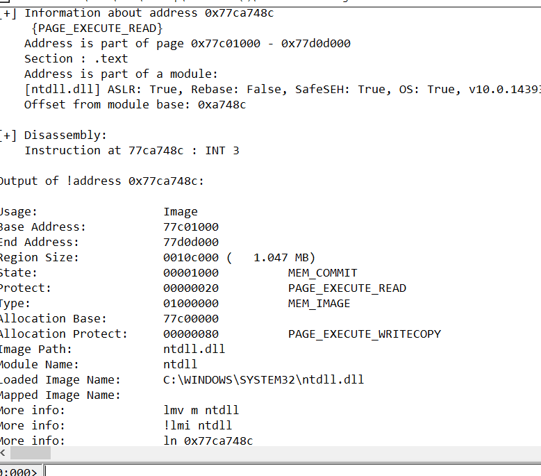
Bueno nos divertimos un rato, y de paso ya lo tenemos instalado para seguir adelante, nos vemos en la parte 34.
Ricardo Narvaja